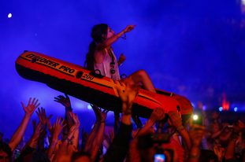

Tomorrowland day #3: David Guetta, Chris Liebing, Richie Hawtin and more


Belgium’s epic Tomorrowland festival drew to a close on Sunday, with one more day of madness in an alternative universe, which was just about all that the overwhelmed tens upon thousands in the crowd would have been able to handle. The spectacular silliness continued at the mainstage ampitheatre, as David Guetta drew the biggest crowd for some particularly over-the-top production, including the biggest fireworks display seen all weekend, before Steve Aoki drove it home.
On the other end of the musical spectrum, techno fans were particularly spoilt for choice on Sunday in particular, having the brutal choice of choosing between Josh Wink’s Ovum Recordings arena next to the water, Dave Clarke’s arena at the colourful castle stage that also featured the likes of Chris Liebing absolutely smashing it out, while Richie Hawtin and his cohorts hosted an Enter tent not too far away.
Otherwise, the bombastic trouse sounds were being blasted out at the Dirty Dutch tent, and just a few steps away the trance contingent were kept happy with the likes of Gareth Emery, Orjan Nilsen, W&W, Tritonal and more in the TranceAddict tent.
Check out the spectacular photos from the final day of Tomorrowland, and stay tuned for ITM’s comprehensive review of what could surely take the crown as one of the world’s finest parties. We’ve also included here a selection of the highlight videos from Tomorrowland’s festival broadcast, including footage of Carl Cox, Fatboy Slim, Joris Voorn and Martin Solveig doing their thing in those spectacular DJ booths across the weekend.